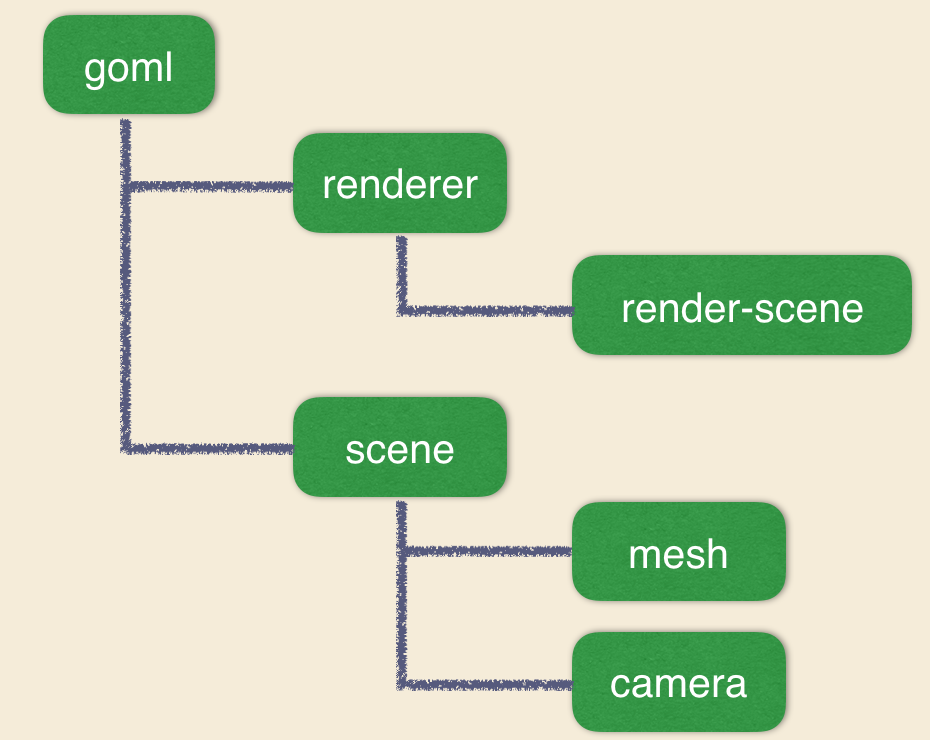
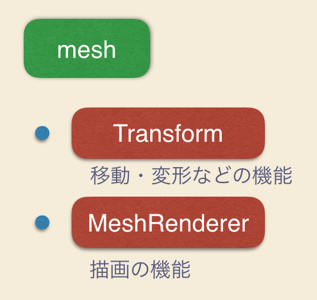
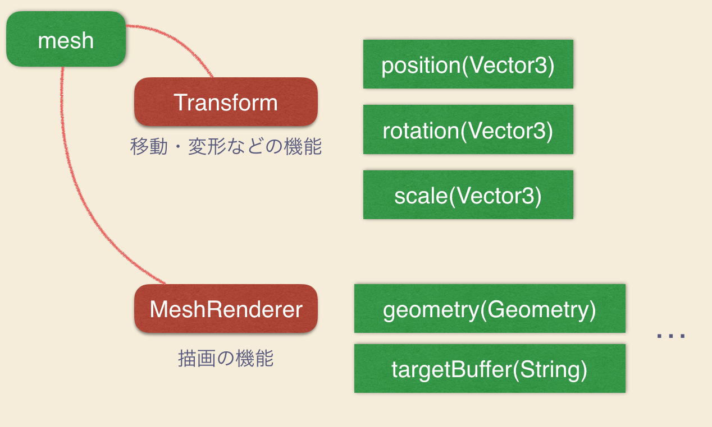

ノードとコンポーネントの本質
概要
ここではノードとコンポーネントの本質を学びます。Grimoire.jsはデータ構造として木構造を持ちます。
学べること
- Grimoire.jsのデータ構造
- ノードとコンポーネントの性質
Grimoire.jsのデータ構造

Grimoire.jsでは、一つのGOMLに対して、一つの木が生成されます。上図は基本的なGOMLに関して、木構造を表したものです。

また各ノードは機能として、コンポーネントをリストにして持っています。<mesh>タグを例に考えてみると、移動や変形、回転の機能を持つTransformコンポーネント、描画に関する機能を持つMeshRendererコンポーネントをデフォルトコンポーネントとして持っています。
このように、各ノードは特定のコンポーネントの組み合わせにより、作成されます。

書くコンポーネントはそれぞれが、適当な属性を持っています。先ほどの3章ではこのコンポーネントの属性をjavascriptを使用して変更していた、ということです。
タグとしてGOMLに記述されるノードはデフォルトコンポーネントの組み合わせを表したものです。実際にノードを作成する場合には、どのコンポーネントを組み合わせるのか、そのノードの名前を定義することが必要です。ユーザーはロジックを構築する際にはコンポーネントに記述することになります。
コンポーネントの属性は対応するノードに露出します。
1 | <mesh position="0,0,0" scale="1,1,1" rotation-"y(30d)"></mesh> |
そのためGOMLで上記のように記述することが可能になっています。
ノードとコンポーネントの性質は以上です。
次はコンポーネントを自作してみましょう。また、制作したコンポーネントはnpmを通して外部に公開することが可能です。